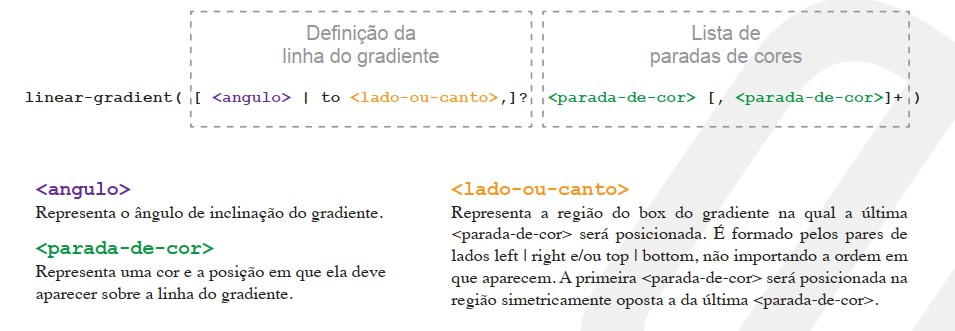
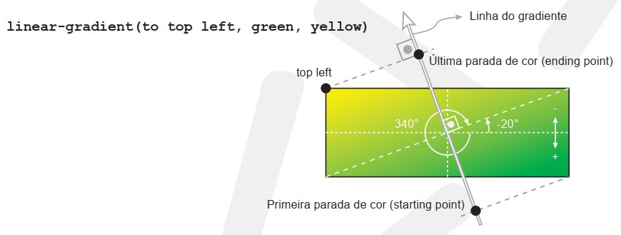
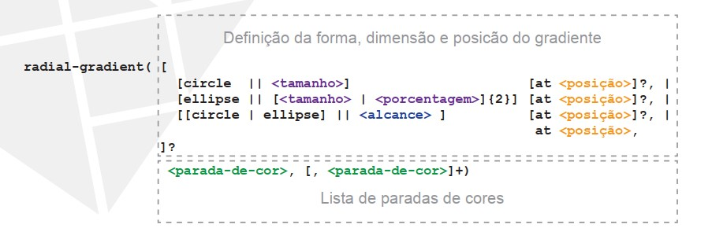
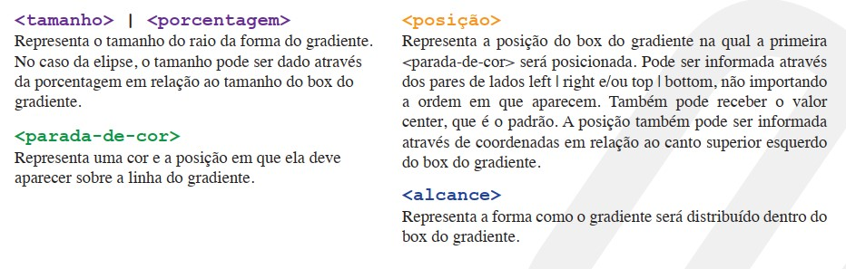
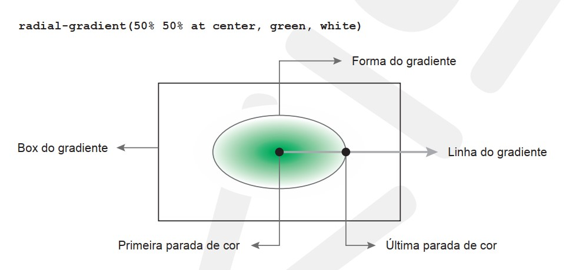

Até a versão 2 do CSS, não era possível definir um gradiente de
cores como background de um elemento a não ser através de imagens
estáticas (jpg, gif ou png). A partir da versão 3, podemos definir
um gradiente diretamente no código CSS através das funções
linear-gradient, repeating-lineargradient, radial-gradient e
repeating-radial-gradient.
De acordo com a especificação CSS, os gradientes são semelhantes às imagens. Eles podem ser
definidos em qualquer propriedade que aceite uma imagem como valor
Para definir um gradiente linear, é necessário utilizar a função
linear-gradient.

No exemplo abaixo, podemos entender melhor cada um dos parâmetros:

Veja mais alguns exemplos:
| linear-gradient(to top right, green 50%, yellow) | |
| linear-gradient(135deg, green, white, blue) |
Repare que quando a primeira parada de cor começa em uma posição diferente de 0%, o gradiente é preenchido com a cor da primeira parada de cor do 0% até essa posição.
Para definir um gradiente linear com repetição, devemos utilizar a
função repeating-linear-gradient que recebe exatamente os
mesmos parâmetros da função linear-gradient.
A princípio o gradiente linear com repetição funcionará da mesma
forma que o gradiente linear.
Seu comportamento só será alterado nas seguintes situações:
| linear-gradient(to top left, green, yellow) | |
| repeating-linear-gradient(to top left, green, yellow) | |
| linear-gradient(to top left, green 50%, yellow) | |
| repeating-linear-gradient(to top left, green 50%, yellow) | |
| linear-gradient(to top left, green, yellow 50%) | |
| repeating-linear-gradient(to top left, green, yellow 50%) |
Para definir um gradiente radial, devemos utilizar a função
radial-gradient.


No exemplo abaixo, podemos entender melhor cada um dos
parâmetros:

Para definir um gradiente radial com repetição, devemos utilizar
a função repeating-radial-gradient que recebe exatamente
os mesmos parâmetros da função radial-gradient.
A princípio o gradiente radial com repetição funcionará da mesma
forma que o gradiente radial.
Seu comportamento só será alterado nas seguintes situações:
| radial-gradient(black 0%, white 25%) | |
| repeating-radial-gradient(black 0%, white 25%) |